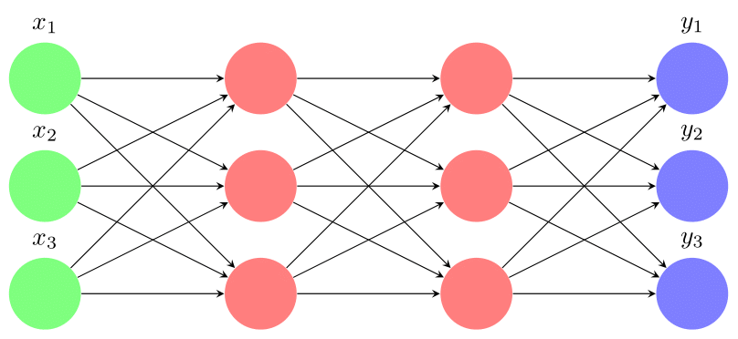
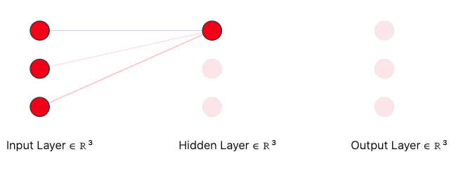
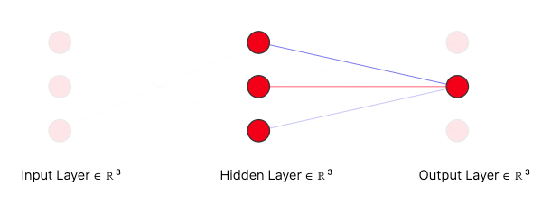

Backpropogation
Backpropogation is a technique which is used to find the gradients of each layer with respect to the loss. We can write our output function as:
\[ \hat{y}_i = \hat{f}(x_i) = O(W_3 \ g(W_2 \ g(W_1 x_i + b_1) + b_2) + b_3) \]
This is when we have 3 inputs, 2 hidden layers with 3 neurons in each and 1 output layer.

We use the optimization algorithm Gradient Descent which can be used to traverse the loss function and get into the local minima.
The update rule goes like this:
\[ \theta_{t+1} = \theta_{t} - \eta \nabla_{\theta}\mathcal{L}(\theta) \]
where \[ \begin{align*} \theta & : \text{Parameters} \\ \eta & : \text{Learning Rate} \\ \nabla_{\theta}\mathcal{L}(\theta) & : \text{Gradient of loss function with respect to the parameters}. \end{align*} \]
As we have more parameters and functions, computation of gradient with respect to the parameters i.e. \(\nabla_{\theta}\mathcal{L}(\theta)\) is not straight forward.
So we depend on chain rule to get the solution.
Let us try to compute just the loss with respect to \(1\) parameter.
\[ \dfrac{\partial \mathcal{L}(\theta)}{\partial W_{111}} = \dfrac{\partial \mathcal{L}(\theta)}{\partial \hat{y}}\dfrac{\partial \hat{y}}{\partial a_{L11}}\dfrac{\partial a_{L11}}{\partial h_{21}}\dfrac{\partial h_{21}}{\partial a_{21}}\dfrac{\partial a_{21}}{\partial h_{11}}\dfrac{\partial h_{11}}{\partial a_{11}}\dfrac{\partial a_{11}}{\partial W_{111}} \]
Before actually understanding this equation, let us see what each term refers to.
\[ \begin{align*} \mathcal{L}(\theta) & : \text{Loss function with respect to } \theta \\ \hat{y} & : \text{Predicted } y \\ h & : \text{Activation layer} \\ a & : \text{Pre-activation layer}\\ W & : \text{Weights} \\ b & : \text{Biases} \end{align*} \]
Firstly, we have to forward propogate through layers. First of all we have to initialize \(W_1\).

Similarly we will do for other neurons.

So, now let us try to write the equations for them.
For the input layer to the hidden layer we have,
First, we compute the values of pre-activation layer \(a_i\).
Therefore, \[ a_1 = W_1 \textbf{x} + b_1 \] where \(\textbf{x} = \begin{bmatrix} x_1 \\ x_2 \\ x_3 \\ \vdots \\ x_n \end{bmatrix}, \textbf{b} = \begin{bmatrix} b_1 \\ b_2 \\ b_3 \\ \vdots \\ b_n \end{bmatrix}\) and \(W_1 = \begin{bmatrix} w_{11} & w_{12} & \ldots & w_{1n} \\ \vdots & \vdots & \ddots & \vdots \\ w_{1n} & w_{2n} & \ldots & w_{nn} \end{bmatrix}\)
Here we have \(\textbf{x} \in \mathbb{R}^n\) and \(W \in \mathbb{R}^{n \times n}\). (Note that all the layers have same number of neurons. If we have \(m\) neurons in hidden layer and \(n\) neurons in input layer, then we will have our weight matrix dimensions as \(\mathbb{R}^{m \times n}\))
Now we have got values for the pre-activation layer. Now we have to intoduce the activation layer will be applied to every value in the pre-activation vector.
\[ h_1 = g(a_1) \]
Then we will be performng this action for every layer.
Now, as we have just 1 hidden layer in our example, we need to get the values for the output.
Now we will use an output function and pass our hidden layer inputs to get the outputs. (This can potentially vary from the activation function.)
\[ \hat{y} = O(h_1) \]
Now let us try to take an example for \(g\) and \(O\) functions.
In this example we will use \[ \begin{align*} g(x_i) & = \dfrac{1}{1 + e^{-x_i}} \\\\ O(x_i) & = \dfrac{e^{x_i}}{\sum_{j = 1}^{n}{x_j}} \end{align*} \] We usually call \(g(x)\) as sigmoid function adn \(O(x)\) as softmax function
So, we will use python to code them out.
# Sigmoid Function
def sigmoid(x):
return 1 / (1 + np.exp(-x))
# Softmax Function
def softmax(L):
arr = []
for i in L:
arr.append(np.exp(i) / np.exp(L).sum())
return arrNow we have to decide upon the loss function. Two best candidates for the loss functions are : Mean squared Loss and Cross Entropy Loss.
Mean Squared loss is generally defined as: \[ MSE(\hat{y}, y) = \dfrac{1}{n}(\hat{y} - y)^2 \]
and Cross entropy loss can be given as \[ CrossEntropy(\hat{y}, y) = -y\log(\hat{y}) \]
We will use cross entropy for this example and then we will also see a code for implementing mean squared loss
def cross_entropy(y_pred, y_true):
return -(y_true @ np.log(y_pred))